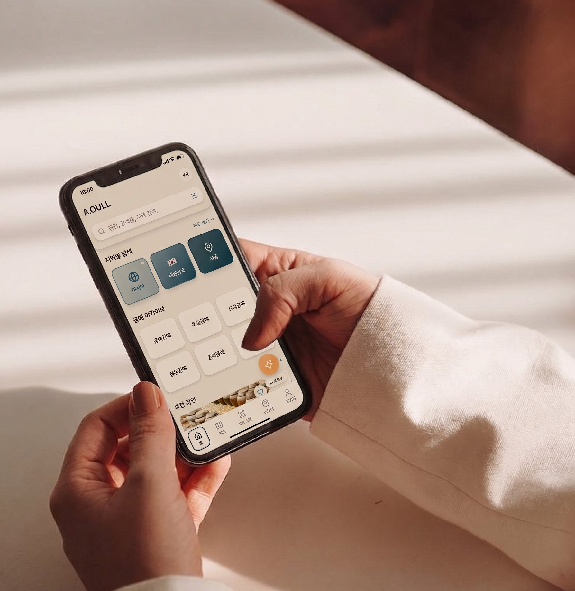
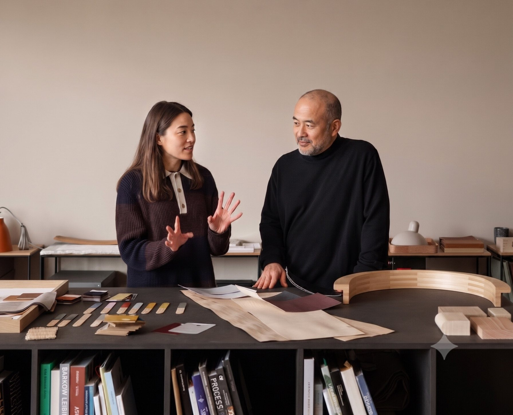
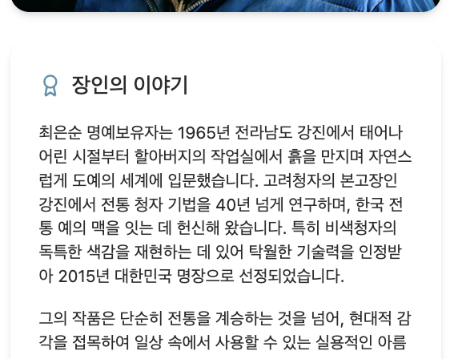

전통은 박물관에 갇혀 있을 때 사라집니다.
장인의 기술, 지역의 문화,
그리고 대대로 내려온 지식을 보고, 듣고,
일상으로 가져갈 때 비로소 살아남습니다.
아울은 전통과 세상을 잇는 것으로
전통문화를 보존합니다.

한국의 국가무형유산 장인 정신을 세계에 알립니다.
문화유산을 잇는
새로운 시작
한국의 전통공예
장인의 기술과 이야기를
AI 도슨트로 소개하고,
구매와 체험으로 연결합니다.
아울은 사라져가는 전통공예의 이야기를
세상과 연결하는 플랫폼입니다.
박물관이 아닌 경험으로.
장인의 손끝에서 시작된 이야기를
당신의 일상으로 전해드립니다.


빠르게 변하는 요즘,
도대체 어떤 제품을
만들어야 팔릴까?
- 공방과 갤러리에만 의존하고 계신가요?
- 기획과 홍보의 한계를 느끼고 계신가요?
- 홍보 할 시간도 없고, 어떻게 해야 할지 모르겠나요?
- 평생 쌓은 기술과 당신의 이야기를 남기고 싶지 않으신가요?


"전통공예,
AI와 함께하는
새로운 경험"

01 — 판로 및 홍보
공방·갤러리를 넘어,
새로운 수익 창구를 엽니다.
촬영부터 홍보까지,A.OULL이 전담하여,
제품 판매 뿐만 아니라 공방 체험과 투어를
상품으로 만들어
작품이 머무는 곳이 넓어집니다.
02 — 기획
팔리는 제품이 되도록
기획을 함께합니다.
뉴리티지 PB 라인과 연계해,
오늘의 일상에 닿는 제품을 장인과 함께 설계합니다.

03 — 소통
소비자와 직접 소통하는 공간을
만들어 드립니다.
프로필 페이지를 만들고, 브랜딩을 함께 고민합니다.
이제 소비자는 제품이 아니라 당신을 먼저 만납니다.
04 — 보존
당신의 이야기를
기록으로 남깁니다.
AI 도슨트 스토리텔링, 스승-제자 가계도,
전통공예 장인을 아카이빙 하여 기록으로 납깁니다.

A.OULL의 파트너가 되어 주세요!
직접 찾아가 인터뷰 촬영과 프로필 사진까지 무료로 남겨드립니다.

"안녕하세요.
두석장 김진환
입니다."
저는 2남 1녀 중 막내로 태어나,
어머니 뱃속에서부터 망치질 소리를 들으며 자랐습니다.
시대가 변하면서 가업이라 해도 일이 워낙 힘들다 보니 함께 배우던 이들이 하나둘 생계 앞에서 떠나갔습니다.
혼자 공방을 지키시던 아버지의 뒷모습을 보면서,
제자가 없어 사라져 가는 무형문화재의 현실을 마주하면서,
저는 이 맥을 여기서 끊을 수 없다고 생각했습니다.
그래서 문화재관리학과에 진학해 기본을 다졌고,
가업인 두석장 일을 곁에서 배우기 시작했습니다.
2000년 아버지가 보유자로 인정받으신 뒤 함께 일을 이어가면서, 저는 자연스럽게 이 길의 전승자가 되었습니다.
지금 이 순간에도 각자의 자리에서 같은 고민을 하고 계실 겁니다.
배울 사람이 없어서, 알아주는 이가 없어서 막막하셨던 적 있으실 거예요. 저도 그랬습니다.


"이제는
5대를 이어온 가업을
A.OULL과 함께
이어가고 있습니다."


"안녕하세요.
옻칠장 천기영 입니다."

저는 경남 통영시에서 나고 자란 "통영 토박이"입니다.
2011년, 통영시 공예 담당 부서에서 일하던 아내를 돕기 시작하면서, 어릴 때부터 보고 자란 나전칠기 지식이 자연스럽게 쓰이게 되었습니다. 그렇게 전국의 장인 선생님들을 만나 뵈면서 통영 나전칠기의 우수성을 새삼 깨달았고, 그중에서도 옻칠 작업의 매력에 깊이 빠져들었습니다.


여러분도 잘 아시겠지만,
나전칠기는 한 사람의 손으로 완성되지 않습니다.
틀을 만드는 소목장,
옻칠을 입히는 옻칠장,
나전을 붙이는 나전장,
금속 장석을 다는 두석장
이렇게 여러 분야의 손이 차례로 모여야
비로소 하나의 나전칠기가 완성됩니다.


2011년 7월, 통영 최고의 나전장이셨던 박재성 선생님의 첫 제자로 입문했습니다.
이어 충북에서는 건칠을, 원주에서는 칠화(옻칠로 그림을 그리는 기법)를 배웠습니다.
2013년 옻칠장으로 등록되어 지금까지 이 길을 걸어오고 있습니다.
현재는 연명예술촌 사무국장을 맡아, 통영의 나전칠기와 옻칠을 세상에 알리는 일도 함께하고 있습니다.
여러분 각자의 자리에서 지켜오신 기술들처럼, 저 역시 이 기술이 사라지지 않도록 애쓰고 있습니다.

"통영의 오랜 역사를
세계에 알리고자 하는
사명감을 저는
A.OULL과 함께
이어가고 있습니다."

A.OULL은 사라져가는
국가무형유산을
세상과 연결하는 여정에
함께할 장인을 찾습니다.
지금 신청하시면 선착순 12명에 한해,
A.OULL이 직접 찾아가
영상 촬영 + 프로필 사진 + 장인의 이야기 기록
무료로 진행해 드립니다.
< 특별 혜택 >
- 인터뷰 촬영
- 프로필 사진
- 전통공예 체험 워크숍 우선 참여권
당신의 손끝에서 이어져 온 시간,
이제 세상과 만날 차례입니다.